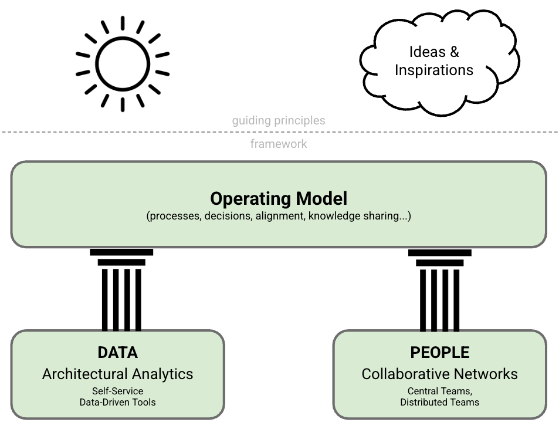

Introduction
IN THIS SECTION, YOU WILL: Understand what this book is about and how to use it.
KEY POINTS:
- This book will share my approach to running an IT architecture practice in larger organizations based on my experience at AVIV Group, eBay Classifieds, and Adevinta. I call this approach “Grounded Architecture”—architecture with strong foundations and deep roots.
- Prioritizing people interactions and data over processes and tools, Grounded Architecture aims to connect an architecture practice to all organizational levels as an antidote to the “ivory tower” architecture.
- I also explain my motivation to write this book.
Have you ever wondered how to run an IT architecture practice without feeling isolated in an ivory tower, detached from your organization’s people, problems, and realities?
If so, this book is for you.
Based on my experiences at AVIV Group, eBay Classifieds, and Adevinta, I introduce an approach I call Grounded Architecture. This practical, human-centered method emphasizes connecting to real-world challenges, real-time data, and real people.
Grounded Architecture is about keeping your feet on the ground rather than floating above the fray. It focuses on making architecture relevant, collaborative, and responsive to our fast-paced environments. It redefines architecture not as a set of abstract frameworks but as a living, evolving discipline rooted in relationships, results, and continuous learning.
In too many organizations, architects are viewed as distant wizards casting spells from a tower—producing documents no one reads and models no one uses. Grounded Architecture challenges that perception by promoting an architecture practice embedded in the organization’s fabric, which is connected to strategy, delivery, operations, and, most importantly, people.
This approach places data and collaboration at the center rather than relying on heavy-handed processes or over-engineered tools. It draws inspiration from Grounded Theory, a research methodology that develops theories from real-world data rather than abstract ideals. In the same spirit, Grounded Architecture evolves through continuous feedback, real usage, and tangible impact—not just best practices from outdated textbooks.
Throughout this book, I will share insights, tools, and stories to help you build an architecture practice that is:
- Collaborative, not isolated
- Adaptable, not rigid
- Outcome-oriented, not obsessed with processes
If you’re an architect, engineering leader, or technologist looking to make architecture more effective and human, this book offers a grounded path forward.
Grounded Architecture Overview
This book introduces Grounded Architecture, a practical, people-centered approach to managing an IT architecture practice—especially in complex, fast-paced organizations. It is based on my experiences at AVIV Group, eBay Classifieds, and Adevinta, and is designed to help you overcome the stereotype of the “architect in the ivory tower.”
Instead, this approach reimagines architecture as deeply embedded, collaborative, and realistic—firmly rooted in the needs of teams, data, and outcomes.
Two Main Parts
The book is divided into two complementary sections (see Figure 1):
- Framework – The essential components that will enable you to build your own Grounded Architecture practice.
- Guiding Principles – Practical insights, tips, and inspiration to help you apply the framework effectively and sustainably.
 Figure 1: Grounded Architecture Overview
The Grounded Architecture Framework
The framework consists of three core elements:
-
Lightweight Architectural Analytics (Data): This element enables data-informed decisions by providing accurate, up-to-date insights into your organization’s technology landscape.
-
Collaborative Networks (People): This emphasizes the power of relationships and peer networks to scale architectural influence and ensure shared ownership of key decisions.
-
Operating Model: This offers the governance structures, principles, and practices that shape how architecture functions across the organization. This includes:
- General Principles: Aligning architecture with your organization’s reality by focusing on collaboration, autonomy, and strategic alignment rather than top-down control.
- IT Governance: Nudge, Taxation, Mandates: Governance should be a balanced mix of soft influence (nudging), economic signals (taxes), and clear boundaries (mandates/bans).
- Leveraging Generative AI within Grounded Architecture Framework: Based on my early explorations, this section shares practical ways to integrate GenAI tools into architectural workflows while maintaining integrity and oversight.
These components together form a pragmatic, adaptive foundation for modern architectural practice—grounded in data, people, and results.
Guiding Principles and Inspiration (Books 2 and 3)
Beyond the framework, this book offers a set of practical tools and reflections that explore the human, strategic, and behavioral dimensions of architecture. These principles are grouped into thematic areas:
On Being an Architect
Explore the mindset and meta-skills of effective architects:
- Building Skills, Making Impact, Leadership
- Thinking Like an Architect: Superglue
- Balancing Curiosity and Skepticism
- Navigating Career Paths
On Human Complexity
Architecture is not just technical—it is deeply social:
- The Culture Map
- The Human Side of Decision-Making
- Cooperation-Based Organizations
- Effortless Architecture
On Strategy
Position architecture as a strategic enabler:
Expanding the Architect’s Toolkit
Learn from adjacent fields to elevate your practice:
- Economics and ROI Modeling
- Customer-Centric Thinking
- Decision Intelligence and Systems Thinking
- Lessons from Mega-Projects
Online Appendix: My Architecture Backpack
Throughout my career, I have relied on a curated set of resources—books, tools, and articles—that continue to shape my thinking. I’ve compiled these for you in the appendix, which includes:
- Favorite Quotes
- Bookshelf
- Growing & Hiring Architects
- Effective Communication
- Dealing with Toxic Colleagues
- Scapegoating at Work
- ISO 25010 Quality Model
- Cloud Design Patterns
- Business Architecture Insights
- Value-Based Strategy
- Digital Marketplace Thinking
- Connecting Marketing and Architecture
- Culture as a Strategy
Before diving into the full framework, I would like to share some thoughts on why I wrote this book.
What Will You Learn?
This book is a practical guide to building and managing a robust, modern IT architecture practice. It aims to help you align with organizational goals, navigate complexity, and thrive in today’s rapidly evolving IT environments.
Whether you’re a practicing architect, a leader of architects, or someone working closely with them, this book will provide you with insight, structure, and inspiration.
Key Topics
You’ll discover useful perspectives and actionable advice on how to:
- Create flexible organizational and technical structures that support and scale IT architecture work.
- Define architecture roles, skills, and career paths to help your architects grow and succeed.
- Operate an architecture practice effectively in diverse, complex, and multicultural environments.
- Learn from real-world lessons and insights based on my experiences at AVIV Group, eBay Classifieds, and Adevinta.
Format & Structure
I’ve organized this book as a high-level “playbook” for running an architecture practice or working as an architect. Each section introduces a topic, offers concrete tips, and concludes with reflective questions to help you apply the ideas in your context.
You can read this book cover to cover or dip into it based on your current needs and interests. With rich illustrations and conceptual visuals, it also functions as a “coffee table book”—perfect for team discussions, sparking conversations, or flipping through for inspiration.
What This Book Is Not
This book is not a technical manual. It does not discuss cloud infrastructure, cybersecurity, database sharding, or performance optimization in depth. While these are essential skills, they are well-covered elsewhere.
Instead, this book broadens your architectural perspective, helping you apply your technical knowledge to complex organizational ecosystems. It’s written for both hands-on architects and those managing or supporting them.
Is This a Proven Method?
This book isn’t a prescriptive methodology, nor is it scientifically validated. It is a personal and opinionated guide, grounded in day-to-day experience rather than academic theory.
What I present here has been tested across three major companies, and while every organization is different, I believe the principles are general enough to be reusable and practical enough to be valuable.
In a field filled with frameworks and formal models, real stories and tested approaches often provide the most valuable guidance. I also encourage others to share their experiences because our discipline becomes stronger through practical reflection and honest exchange, rather than abstract theory.
Who Should Read This Book?
This book is intended for:
- IT architects who want to enhance their impact, influence, and clarity.
- Engineering leaders who manage architects and wish to organize their work more effectively.
- Business and product leaders looking to understand the value of architecture and how to collaborate better with technical teams.
I designed it to be accessible to both technical and non-technical readers, and useful whether you’re building a practice from scratch or refining an existing one.
Applying Ideas in Practice: Architecture as Cooking
I like to think of starting or improving an architecture practice as a form of culinary art.
Imagine arriving at a new company like a chef stepping into an unfamiliar kitchen, carrying a suitcase filled with your favorite tools and spices. Your most important work comes next: discovering the local ingredients.
Great cooking depends on what’s fresh and available, but great architecture relies on your organization’s people, culture, and context. Your frameworks and experience provide structure, but the authentic flavor comes from your team: their skills, insights, and unique organizational knowledge.
While I’ll share recipes, methods, and even a few secret sauces, remember: you’ll always need to adapt to your local ingredients.
Beyond Rigid Frameworks: IT Architecture as a Collaborative, Adaptable, Outcome-Oriented Practice
In this book, I use the terms IT architecture and IT architects broadly and inclusively. I do not draw strict lines between enterprise, solution, technical, or software architecture, nor do I narrowly define titles such as enterprise architect, solution architect, or staff-level technical leaders like principal engineers.
Instead, I view IT architecture as a cohesive function—a bridge that connects technology, business, product, and organizational strategy. Architecture encompasses more than a set of tasks or responsibilities; it serves as the connective tissue that brings coherence to complex ecosystems, enabling various parts of the organization to work in harmony.
Grounding and Empowerment
Rather than advocating for rigid distinctions between roles, I propose empowering architects with a data-informed, outcome-oriented mindset. In this approach, architectural roles are adaptable, evolving to meet the organization’s needs while remaining aligned to deliver meaningful value.
Grounded Architecture refers to anchoring architectural work in the organization’s reality:
- Grounded in data to inform decisions
- Grounded in people to foster collaboration and shared understanding
- Grounded in pragmatic operating models that guide action
To adopt this approach, you do not need to restructure your teams or redefine every role. What matters most is how architects operate—as collaborators, connectors, and enablers of aligned outcomes.
Adaptability Over Rigidity
IT architecture is not one-size-fits-all. Its form and focus should adapt to the context of each company. In some organizations, the emphasis may be on business alignment—ensuring that technology investments directly support the mission. In others, the focus may be on technical depth—working closely with engineers to build scalable, secure, high-performing systems.
Regardless of emphasis, the core function remains the same: to bring coherence to complexity and alignment to decisions. Therefore, I define “architect” not by job title, but by function—anyone who bridges the gap between strategic intent and technical execution is an architect.
This adaptable perspective allows organizations to maximize the benefits of architecture while enabling architects to adjust their contributions based on what is most needed—strategy, integration, governance, or mentorship.
Accepting the Challenges
Of course, this broader and more flexible view brings new challenges.
Unlike traditional frameworks, which have predefined roles, clear handoffs, and rigid responsibilities, the Grounded Architecture approach requires architects to adapt continuously. It values relevance over formality and responsiveness over structure.
This approach can be demanding.
It requires architects to:
- Shift fluidly between strategic thinking and hands-on guidance
- Engage regularly with diverse stakeholders
- Recalibrate their priorities as business needs evolve
- Make decisions amid ambiguity and uncertainty
It also demands sound judgment—knowing when to lead, when to advise, and when to step back.
However, with these challenges come significant benefits.
Architects who embrace this approach are better equipped to respond to real-world needs. They help build solutions that are context-aware, collaborative, and aligned with long-term goals. They foster trust, promote innovation, and unlock value—not by controlling systems, but by guiding them with insight, empathy, and adaptability.
This book is a call to reimagine architecture as a living, collaborative, and responsive practice. One that moves beyond rigid frameworks and static organizational charts. One that values architectural success not in titles or artifacts, but in outcomes, alignment, and impact.
It may not always be the easiest path, but I believe it is the one most capable of delivering lasting value in complex, modern organizations.
Key Influences
The Grounded Architecture approach is shaped not only by my experiences but also by the work and ideas of others who have inspired and informed my thinking.
The Architecture Elevator — Gregor Hohpe
One of the most influential voices behind this work is Gregor Hohpe and his concept of the Architecture Elevator. Gregor provides a vivid illustration of the modern architect as someone who navigates between the “penthouse,” where strategy is developed, and the “engine room,” where technology is built.
His perspective of architects as enablers of alignment, friction reduction, and transformation strategy has been foundational to my practice of Grounded Architecture. Much of what I share in this book reflects the valuable lessons learned from applying Gregor’s ideas in real organizational contexts.
Staff+ Engineering — Tanya Reilly & Will Larson
Another major influence has been the evolution of Staff+ engineering roles, which present a contemporary and practical view of technical leadership. Key texts such as:
…offer a clear and relatable framework for understanding what senior technical leadership entails outside of traditional management tracks. These models have significantly shaped my thoughts on the responsibilities, mindset, and career development of modern architects.
Staff+ engineers and architects often encounter similar challenges—balancing long-term vision with day-to-day decisions, influencing without authority, and collaborating across boundaries. The overlap between these roles is considerable, and these resources have informed my perspective on architectural maturity, influence, and impact.
Many More Sources
Grounded Architecture is built on a broad foundation of books, frameworks, articles, and tools—too numerous to list in one place. I have collected and curated many of these resources in the online Bookshelf appendix, where you can explore what has influenced this work and perhaps find inspiration for your own journey.
Why This Book?
This book serves as a way to generalize and share years of experience as a practicing architect and architecture leader. It originated from a need to clarify my thinking, educate others, and create shareable resources that can help individuals and organizations better understand and apply modern architectural practices.
 Figure 2: Writing helped me refine my thinking, evolve tools and principles, and share lessons learned.
Figure 2: Writing helped me refine my thinking, evolve tools and principles, and share lessons learned.
Writing to Think
Writing forces clarity. As Gregor Hohpe once said, “Every sentence you write frees up brain cells to learn new things.” This was true for me as I began to shape my ideas into written form. Writing this book helped me:
- Organize my thoughts
- Identify gaps and contradictions in my approach
- Enhance my frameworks and tools
- Discover new insights through reflection
Writing to Teach
Another motivation was education—specifically, educating architects and technical leaders within the organizations I’ve worked for. I found that well-written, accessible material helps:
- Explain the “why” behind architecture
- Standardize terminology and mindset
- Create alignment across teams and levels
As Gregor Hohpe also points out, writing has several distinct advantages over spoken communication:
- It scales — You don’t need to be present to reach your audience.
- It’s faster — People read 2–3 times faster than they can listen.
- It’s searchable and reusable — Readers can revisit it, quote it, and reference it.
In short, written content makes architectural thinking more portable and enduring—ideal for spreading modern ideas across large, distributed organizations.
Writing to Share (and Learn More)
By documenting and refining my experiences, I hope to make this content valuable for others—whether they are facing similar challenges or are simply curious about evolving their architectural practice. I also look forward to:
- Learning from others’ feedback
- Comparing notes with peers
- Continuing the conversation about what modern IT architecture can become
This book is not a final answer; it’s a living reflection of one practitioner’s journey. My hope is that it sparks new insights, invites discussion, and helps architects—and those who work with them—develop more grounded, human, and effective practices.
A Part of the Bigger Picture: A Trilogy in Four Parts
This book is just one piece of a broader ecosystem of open-source tools and resources I have developed over the past decade to support my work as an architect. Together, they form a practical toolkit designed to make architecture more data-informed, efficient, and impactful.
 Figure 3: Grounded Architecture is part of a collection of open-source tools and learning resources developed over the past 10 years.
Figure 3: Grounded Architecture is part of a collection of open-source tools and learning resources developed over the past 10 years.
Other Tools in the Collection
-
Sokrates
A polyglot source code analysis tool for extracting actionable insights from codebases.- Understand your codebase through visualizations of size, complexity, coupling, and team topologies.
- Sokrates is designed to be pragmatic, lightweight, and accessible, making it perfect for architects who need fast, clear insights from actual repositories.
-
Productivity Tools
A curated set of over 100 free online tools I use regularly to support my daily architectural and engineering tasks.- This collection includes everything from text parsers and visualization generators to JSON formatters and other architectural aids.
-
359° Overview of Tech Trends
A hand-picked, constantly updated collection of podcasts, videos, and talks from over 20 high-quality sources, including IEEE, ACM, SE Radio, GOTO, and Martin Fowler.- This resource is designed to help architects learn quickly and stay current in a noisy, fast-changing world.
- It includes Ph.D. theses, conference talks, and trusted expert commentary to support deep, strategic thinking.
For more about these tools and how I use them in practice, visit my homepage at obren.io.
Together, these resources support the vision behind Grounded Architecture, helping architects stay connected, curious, and grounded in both data and real-world needs.
A Bit of Personal History
The ideas and practices presented in this book are based on years of hands-on experience across various roles, organizations, and industries. Each chapter of my career has contributed essential insights that form the foundation of the Grounded Architecture approach.
AVIV Group, eBay Classifieds, and Adevinta
Much of the work in this book stems from my current role as Chief Architect at AVIV Group, as well as my earlier positions as Principal Architect at eBay Classifieds and Adevinta. These experiences have enabled me to lead architectural practices in large, complex, and rapidly evolving organizations, skillfully balancing long-term strategy with everyday realities.
Software Improvement Group (SIG)
In the earlier stages of my career, I was a consultant and analyst at the Software Improvement Group (SIG), where I discovered the power of data-informed decision-making. This role taught me how to extract meaningful insights from systems and how invaluable these insights are for guiding architectural choices.
Building on that experience, I developed Sokrates, an open-source tool designed to extract data from source code repositories to visualize system complexity, team structures, and organizational dynamics. This work significantly influenced the Lightweight Architectural Analytics pillar of the Grounded Architecture framework.
Incision
My tenure as CTO of Incision, a healthcare startup, provided a direct view of the challenges in building and managing a technology organization from scratch. It was an intense, insightful, and humbling journey that deepened my understanding of architecture at the intersection of delivery, constraints, and leadership.
Research in Design and Systems Thinking
Before entering the industry, I worked as a researcher at the Dutch Center for Mathematics and Computer Science (CWI) and Eindhoven University of Technology (TU/e). This academic background equipped me with skills in rigorous data analysis, modeling, and research methods.
One project from that period that significantly shaped my perspective was Design Instability, a series of essays co-authored with Erik Stolterman. We explored the commonalities in architectural practices across disciplines, including classical design, UX design, and software engineering. This exploration helped me appreciate the value of cross-disciplinary thinking, a crucial skill for modern architects working at the intersection of technology, people, and business.
Developer Roots
Finally, I greatly value my early experience as a hands-on software developer. It’s important for architects to remain close to the code and to the developers who write it. This technical grounding has proven essential in all my subsequent roles.
Together, these experiences have shaped a practice that is data-informed, people-oriented, and grounded in real-world complexity. This book reflects those lessons—not as a theoretical model, but as a practitioner’s field guide for building architecture that truly works: inside real organizations, with real people, solving real problems.
Stay Connected
You can find additional resources online at:
Feel free to follow me on LinkedIn to see what I am up to:
Acknowledgments
I sincerely thank all members of AVIV Group’s Architecture Center of Excellence and the eBay Classifieds Virtual Architecture Team (VAT). Your thoughtful feedback, honest conversations, and challenging questions were crucial in shaping the ideas presented in this book. Our discussions were not only insightful but also essential.
I want to thank Peter Maas and Brent McLean for their leadership and vision. Your commitment to developing a data-informed architecture practice has laid the foundation for much of the work described here. Your support and encouragement have made a real difference.
This book reflects a shared journey, and I am grateful for everyone who has walked part of the path with me.
The cover image is a photo of Nesciobrug. Credit: the botster, CC BY-SA 2.0, via Wikimedia Commons.
{kind=link}

Introduction |